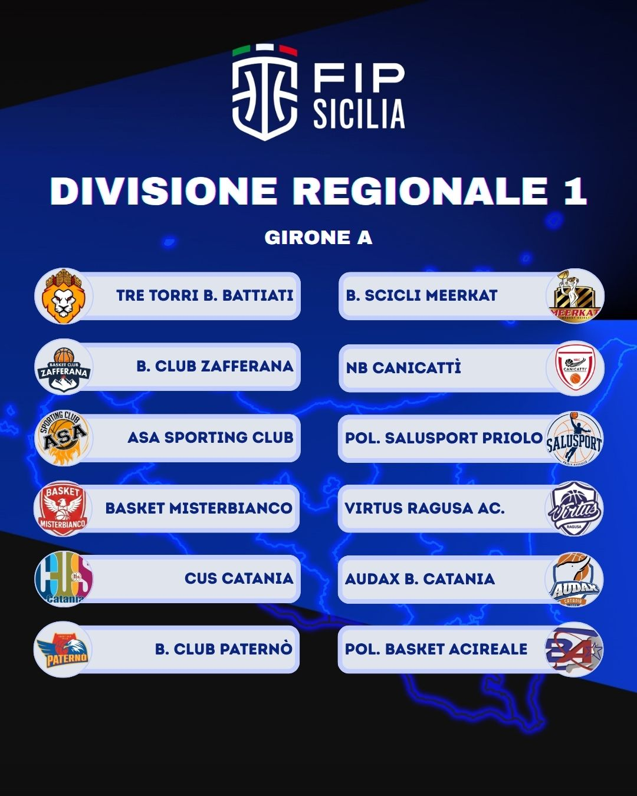

Con i CU n. 37 e 38, l'ufficio gare ha reso noto il calendario dei due gironi di Divisione Regionale 1 (ex Serie D). Il campionato conterà su 23 squadre divise in due gironi e inizierà il 10 ottobre 2026.
Al termine della qualificazione, le prime otto squadre si affronteranno nei play-off interni al girone, al meglio delle tre gare. Le due vincitrici dei due gironi disputeranno una serie di classificazione su andata e ritorno per stabilire la promozione in Serie C; la perdente della classificazione avrà il diritto di priorità nell'ammissione al prossimo campionato di Serie C. La 12ª del Girone A e l'11ª del Girone B disputeranno uno spareggio formula coppa e la perdente sarà retrocessa in DR2.
Non si registravano tante iscritte alla ex Serie D dal 2010/11, quando le partecipanti sono state 31; da allora, al massimo si sono iscritte 22 squadre nel 2017/18 e 2018/19.
| Giornata | Data | Partita | Campo |
|---|---|---|---|
| 1ª | 10 ottobre 2026 | Pol. Salusport Priolo vs Meerkat | Fuori casa |
| 2ª | 17 ottobre 2026 | Meerkat vs ASA Sporting Club Catania | Campo di Pozzallo |